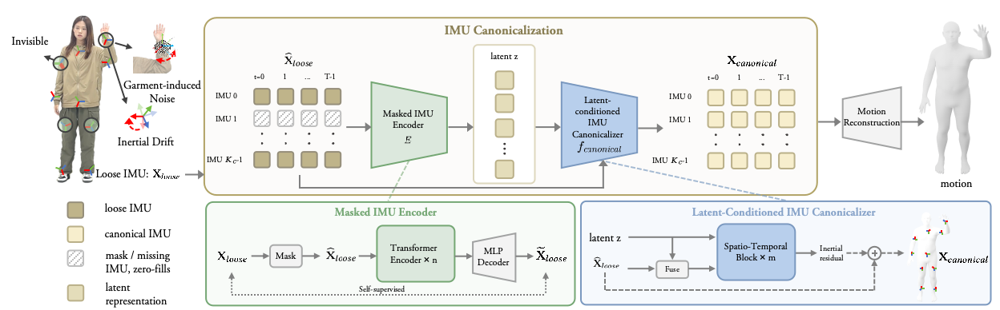

Garment-mounted inertial measurement units (IMUs) offer a promising path toward comfortable, unobtrusive, and scalable human motion capture, yet their performance still lags behind tightly attached inertial systems. The central challenge is that loose-wear IMUs provide only indirect, garment-mediated measurements of the underlying body dynamics. The sensor–body coupling is configuration-dependent, varying with garment material, fit, sensor placement, and IMU layout, while long-term inertial drift further perturbs the observation space. Consequently, identical body motions can induce substantially different inertial measurements across garments, yielding heterogeneous, noisy, and temporally drifting observations. In this paper, we introduce CLOTHO, an IMU canonicalization framework for garment-based inertial motion capture. Rather than directly mapping loose-wear IMUs to body pose, CLOTHO reformulates garment-based motion capture as an IMU canonicalization problem: recovering clean, drift-corrected, and spatially complete tight-wear inertial signals from corrupted and incomplete loose-wear observations. To train and evaluate CLOTHO, we collect the largest garment-based inertial motion capture dataset to date, comprising 12.5M IMU frames, approximately 116 hours of recordings, and five garment designs with diverse materials, layouts, IMU counts, and sensing hardware. Extensive experiments show that a single fixed CLOTHO model achieves state-of-the-art accuracy, zero-shot generalization to unseen garments, and improved robustness during long-term tracking. We also find that CLOTHO demonstrates superior scaling behavior, enabling practical deployment across diverse everyday garments. We will open-source all our software codes, model weights, hardware designs, and datasets to facilitate future research.
